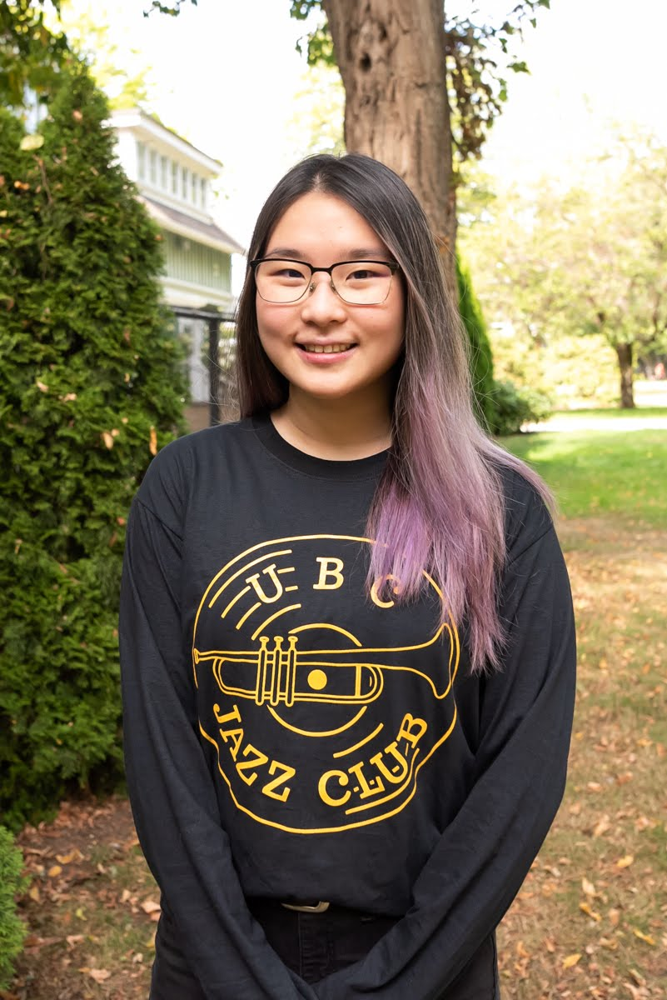
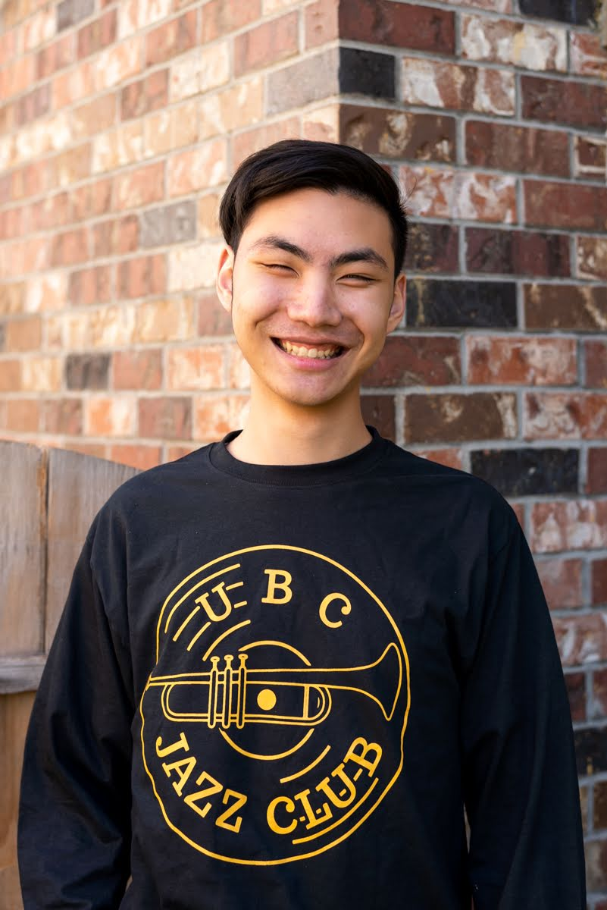
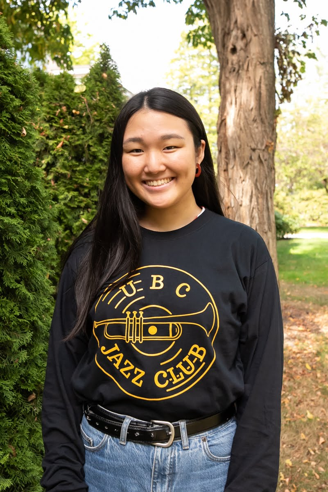
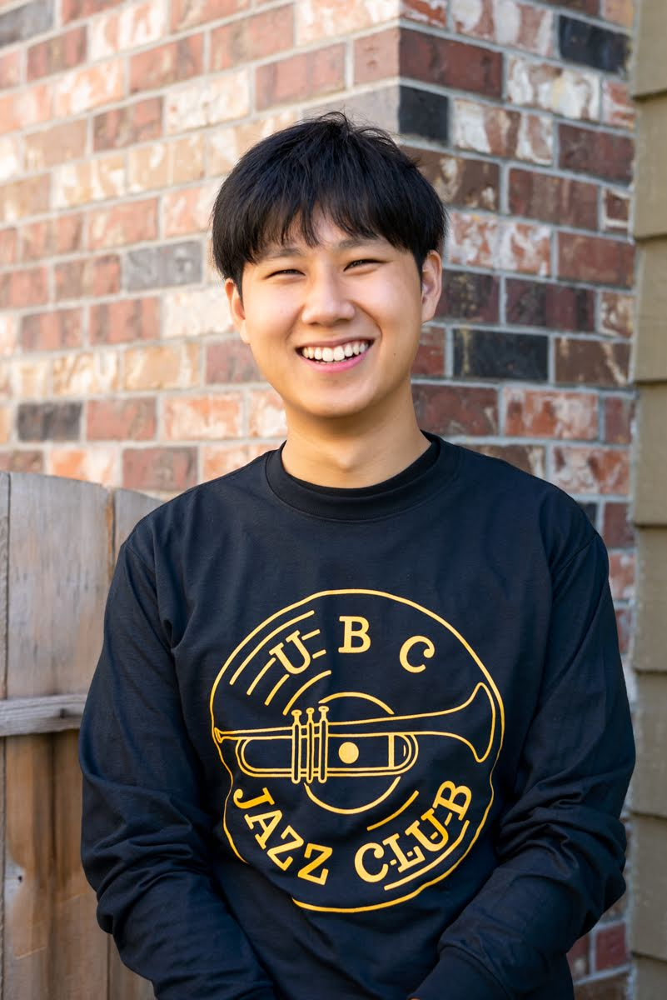

Amy Tan
Co-President
Originally from Edmonton, Amy brings to UBC Jazz Club her marketing expertise through having led the Marketing Team and being deemed the “unofficial 3rd Prez” last year along with her overall chill vibes. In addition, she does jazz vocals and often goofs around with ‘Berta jokes.
Alongside Emily, here’s to hoping that the two will be able to keep the exec team (who are predisposed to chaos) in check.

Emily Chow
Co-President
Emily has been a long-time member of the Jazz Club, working behind the scenes on Marketing, from promotional graphics to memes. She radiates a warm and bubbly presence throughout our weekly sessions and meetings.
Alongside Amy, here’s to hoping that the two will be able to keep the exec team (who are predisposed to chaos) in check.

Piyotr Kao
Administrator
With his quick wit and dry humour, Piyotr always keeps us in line with his organization and coding. As an avid bassist and designated conversation ad-libist, there is no dull moment with him around.
Coal Shultis
Treasurer
Goofy and talented does not even begin to describe Coal. As Treasurer, he keeps our club afloat in addition to being an essential saxophonist at our weekly jam sessions.

Ashley Kim
Marketing Vice President
Being a great team player, Ashley has designed most of our promotional material over the past few years. She is ready to lead the marketing team this year with her ambition and creativity.

TBD
Social Media Coordinator (Marketing)
Someone who can schedule and engage our members and general public through social media content while being surrounded by a group of enthusiastic jazz-lovers.
Christopher Knee
Music Vice President
Experienced guitarist and saxophonist hailing from Chilé and Victoria, Chris is at the helm of all music-related operations at Jazz Club. Normally found scream-laughing with his fellow club members.

Matthew Cam
Music Executive
Previously holding the Co-President role for 2019, Matthew’s steady presence and music expertise has benefitted the club over the past 4 years. If he’s not helping run the jam sessions, he’s likely distracting the other musicians or playing a video game with Chris.
Dylan Brown
Music Executive
Piano, Trumpet, French Horn and Clarinet, you could call him a jack-of-all-trades, master-of-all. Dylan has led the jazz club weekly events for years and been an essential member of the club and has decided to join us in organizing this year!